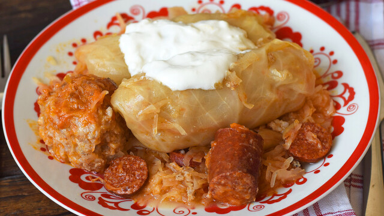

Stuffed Cabbage

Description
The traditional Hungarian cabbage roll (töltött káposzta) can be made from sweet or sauerkraut cabbage leaves filled with a mixture of minced pork meat,
eggs, and rice seasoned with paprika, caraway, salt, and pepper. The Hungarian version often contains minced pepper (paprika) and is served with sour cream on top.
Many Hungarians serve this food during Christmas and New Year's Eve, although it is a common dish throughout the year (sweet version during summer/fall and the sour
during winter/spring time). The sour stuffed cabbage is part of the traditional Hungarian pig slaughter menu and it is said that eating this during the holiday season
will bring you wealth and health for the new year.
Ingredients
- 1 medium head cabbage
- 1 can (28 ounces) sauerkraut, divided
- 1/2 pound ground beef
- 1/2 pound ground pork
- 1/2 cup long grain rice, cooked
- 1 teaspoon salt
- 1/2 teaspoon pepper
- 1 large egg
- 2 bacon strips, diced
- 1 cup chopped onion
- 2 garlic cloves, minced
- 1 tablespoon Hungarian paprika
- 1/4 teaspoon cayenne pepper
- 1 can (14-1/2 ounces) diced tomatoes, undrained
- 1 tablespoon caraway seeds
- 2 cups water
- 2 tablespoons all-purpose flour
- 1 cup sour cream/li>
Instructions
- Remove core from head of cabbage. Place in a large saucepan and cover with water.
Bring to a boil; boil until outer leaves loosen from head. Lift out cabbage; remove softened leaves.
Return to boiling water to soften more leaves. Repeat until all leaves are removed. Remove tough center stalk from each leaf.
Set aside 12 large leaves for rolls; set remaining leaves aside.
- Spoon half of the sauerkraut into a Dutch oven; set aside. In a bowl, combine the beef, pork, rice, salt, pepper and egg.
In a saucepan, cook bacon until crisp. Drain on paper towels. In drippings, saute onion and garlic until tender.
Add bacon and half of onion mixture to meat mixture; mix well.
- Preheat oven to 325°. Place about 3 tablespoons filling on each cabbage leaf. Roll up, tucking in sides.
Place rolls, seam side down, on sauerkraut in Dutch oven. Coarsely chop reserved cabbage leaves; place over rolls.
To remaining onion mixture, add paprika, cayenne, tomatoes, caraway seeds, water and remaining sauerkraut. Cook until heated through. Pour over rolls.
- Cover and bake for 1 hour 45 minutes. In a small bowl, gradually stir flour into sour cream.
Stir in 1 to 2 tablespoons hot cooking liquid; mix well. Spoon over cabbage rolls. Bake, uncovered, until sauce is thickened, 15-20 minutes.
Back